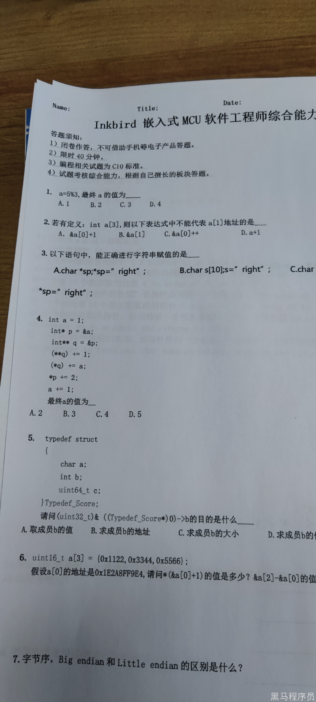
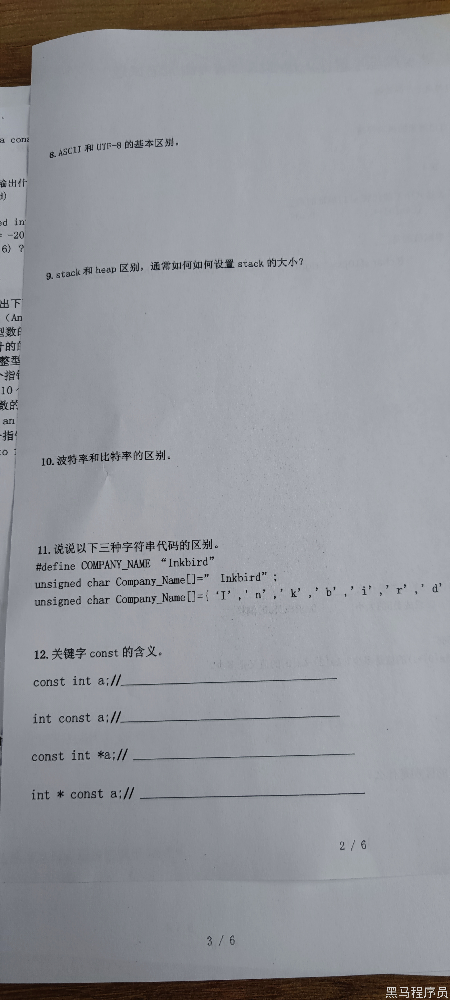
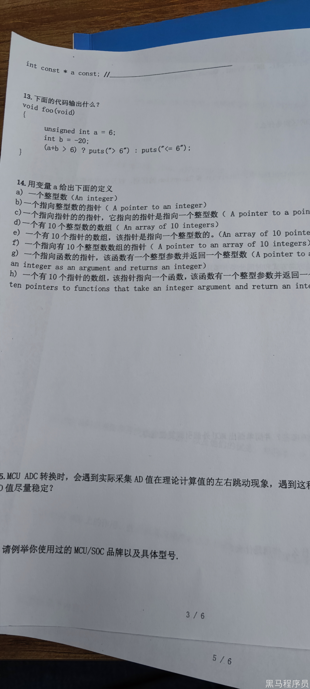
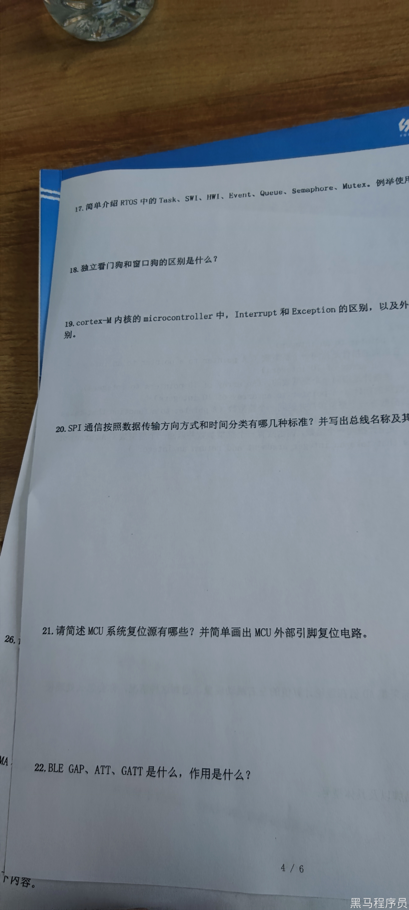

<!DOCTYPE lake>
<h2 data-lake-id="Ww97V" id="Ww97V"><span data-lake-id="ueb82318c" id="ueb82318c">薪资： 12-20k</span></h2><h2 data-lake-id="iQLIn" id="iQLIn"><br/></h2><h2 data-lake-id="EKd3c" id="EKd3c"><span data-lake-id="uf0ba8c63" id="uf0ba8c63">笔试题</span></h2><h3 data-lake-id="IW2Of" id="IW2Of"><span data-lake-id="u689418e9" id="u689418e9">问题汇总</span></h3><ol list="u90413c0d"><li data-lake-id="uf35698da" fid="u8beb6e48" id="uf35698da"><span data-lake-id="u3a0605f5" id="u3a0605f5"> a=5%3,最终a 的值为</span><strong><span data-lake-id="ucae4b518" id="ucae4b518">2</span></strong></li><li data-lake-id="u1c55d380" fid="u8beb6e48" id="u1c55d380"><span data-lake-id="ufec2a004" id="ufec2a004">若有定义:int a[3],则以下表达式中不能代表 a[1]地址的是</span><strong><span data-lake-id="ucf3f9156" id="ucf3f9156">C</span></strong></li></ol><blockquote data-lake-id="u342de70d" id="u342de70d" style="padding-left: 2em"><p data-lake-id="uf456cfde" id="uf456cfde"><span data-lake-id="uadf8c236" id="uadf8c236">a[1] 地址表示方式：</span></p><ul list="ue3b0f155"><li data-lake-id="uc2a7e629" fid="u2d2d5752" id="uc2a7e629"><span data-lake-id="u1f2e33c8" id="u1f2e33c8">&amp;a[1]</span></li><li data-lake-id="u2224b1e3" fid="u2d2d5752" id="u2224b1e3"><span data-lake-id="u3fefd7f6" id="u3fefd7f6">&amp;a[0] + 1</span></li><li data-lake-id="u804f22c1" fid="u2d2d5752" id="u804f22c1"><span data-lake-id="ueaa3faf2" id="ueaa3faf2">a+1</span></li></ul></blockquote><ol list="u90413c0d" start="3"><li data-lake-id="u1ca10776" fid="u8beb6e48" id="u1ca10776"><span data-lake-id="uaf30de90" id="uaf30de90">以下语句中，能正确进行字符串赋值的是</span><strong><span data-lake-id="u4a6be5a1" id="u4a6be5a1">C</span></strong></li></ol><blockquote data-lake-id="u54bf4722" id="u54bf4722" style="padding-left: 2em"><p data-lake-id="u1e3f8e66" id="u1e3f8e66"><span data-lake-id="u19ef68b3" id="u19ef68b3">A不行，B不行，D不行。</span></p><p data-lake-id="ud7dc344a" id="ud7dc344a"><span data-lake-id="u0aa95bd5" id="u0aa95bd5">C应该是 char s[10] = " right";</span></p></blockquote><ol list="u8c30aab9" start="4"><li data-lake-id="u2b3ad62f" fid="u057e8f16" id="u2b3ad62f"><span data-lake-id="ub1293b9a" id="ub1293b9a">最终a的值为3</span></li></ol><span class="yuque-card-unsupported">[codeblock]</span><ol list="u389ffb57" start="5"><li data-lake-id="u6590ea4e" fid="u01763a6d" id="u6590ea4e"><span data-lake-id="ueac53d7c" id="ueac53d7c">请问</span><code data-lake-id="ue453d283" id="ue453d283"><span data-lake-id="u7d66f3ab" id="u7d66f3ab">(uint32_t) &amp; ((Typedef_Score*)0)-&gt;b</span></code><span data-lake-id="u2e6cdc45" id="u2e6cdc45">的目的是什么</span></li></ol><span class="yuque-card-unsupported">[codeblock]</span><blockquote data-lake-id="udecaabdc" id="udecaabdc" style="padding-left: 2em"><p data-lake-id="u33784289" id="u33784289"><strong><span data-lake-id="ud5127e27" id="ud5127e27">B. 求成员b的地址</span></strong></p><p data-lake-id="u02ecd2b8" id="u02ecd2b8"><code data-lake-id="u6eec4a4c" id="u6eec4a4c"><span data-lake-id="u17706fd5" id="u17706fd5">(Typedef_Score*)0</span></code><span data-lake-id="uac3594ac" id="uac3594ac">:将0转换为</span><code data-lake-id="udb1e1a77" id="udb1e1a77"><span data-lake-id="ue7fb9c6b" id="ue7fb9c6b">Typedef_Score*</span></code></p><p data-lake-id="ube5e3d0b" id="ube5e3d0b"><code data-lake-id="uad8ae5eb" id="uad8ae5eb"><span data-lake-id="ufba1cb47" id="ufba1cb47">-&gt;b</span></code><span data-lake-id="u2120458c" id="u2120458c">: 取b成员</span></p><p data-lake-id="u7b81a75a" id="u7b81a75a"><code data-lake-id="u4615658b" id="u4615658b"><span data-lake-id="uee11f2d5" id="uee11f2d5">&amp;</span></code><span data-lake-id="ud65d93f5" id="ud65d93f5">: 取地址。</span></p></blockquote><ol list="u9dfed6e9" start="6"><li data-lake-id="u9d36fc67" fid="u33ebfc83" id="u9d36fc67"><span data-lake-id="u7e50ac20" id="u7e50ac20"> uint16_t a[3] = {0x1122,0x3344,0x5566 };</span></li></ol><p data-lake-id="ue53495d6" id="ue53495d6" style="padding-left: 2em"><span data-lake-id="udbf5d744" id="udbf5d744">假设a[0]的地址是0xIE2A8FF9E4,请问*(&amp;a[0]+1)的值是多少? &amp;a[2]-&amp;a[0]的值</span></p><blockquote data-lake-id="u50b90ba0" id="u50b90ba0" style="padding-left: 2em"><p data-lake-id="u73d51cea" id="u73d51cea"><code data-lake-id="ufa77f5f5" id="ufa77f5f5"><span data-lake-id="uf3af8776" id="uf3af8776">&amp;a[0]+1</span></code><span data-lake-id="u5e5ca0c2" id="u5e5ca0c2">表示是 &amp;a[1]，也就是a[1]的地址。</span></p><p data-lake-id="u338df745" id="u338df745"><code data-lake-id="u33268071" id="u33268071"><span data-lake-id="u1b720e8c" id="u1b720e8c">*(&amp;a[0]+1)</span></code><span data-lake-id="udfeca545" id="udfeca545">就是取a[1]地址的值，那就是a[1]的值：</span><strong><span data-lake-id="u553c17a7" id="u553c17a7">0x3344</span></strong></p><p data-lake-id="uf9f66ce9" id="uf9f66ce9"><code data-lake-id="u1ffea9cc" id="u1ffea9cc"><span data-lake-id="ucb576b55" id="ucb576b55">&amp;a[2]</span></code><span data-lake-id="u5640dbcc" id="u5640dbcc">表示的是地址</span></p><p data-lake-id="u429200bb" id="u429200bb"><code data-lake-id="u44e68fb2" id="u44e68fb2"><span data-lake-id="u8ef58deb" id="u8ef58deb">&amp;a[0]</span></code><span data-lake-id="ubccf6983" id="ubccf6983">表示的是地址</span></p><p data-lake-id="u3e0ff0d3" id="u3e0ff0d3"><span data-lake-id="u9b75c194" id="u9b75c194">数组地址是连续的，当前的数组是</span><code data-lake-id="u6f9d8d11" id="u6f9d8d11"><span data-lake-id="uaf468958" id="uaf468958">uint16_t</span></code><span data-lake-id="u935148c9" id="u935148c9">，那就是两个字节，</span><strong><span data-lake-id="u5df96170" id="u5df96170">也就是1比0多2个字节，那么2比0就多4个字节，结果为4</span></strong></p></blockquote><ol list="ua8a56bbc" start="7"><li data-lake-id="u362788f3" fid="ub99b4610" id="u362788f3"><span data-lake-id="ud32fa024" id="ud32fa024">字节序，Big endian和Little endian 的区别是什么?</span></li></ol><blockquote data-lake-id="ub2ffdd2d" id="ub2ffdd2d" style="padding-left: 2em"><p data-lake-id="uab27935f" id="uab27935f"><span data-lake-id="ua1d2abdf" id="ua1d2abdf">Big endian： 大端序。</span></p><p data-lake-id="uc388234c" id="uc388234c"><span data-lake-id="u9ef23813" id="u9ef23813">Little endian: 小端序。</span></p><p data-lake-id="u7f258c9d" id="u7f258c9d"><span data-lake-id="u40fc1f27" id="u40fc1f27">首先大小端序是针对多字节的。单字节数据就是一个byte，不存在端序问题。</span></p><p data-lake-id="u89851ab3" id="u89851ab3"><span data-lake-id="u951f0baf" id="u951f0baf">计算机表示数据最小单位就是byte。例如我们用 两个byte表示short，用4个byte表示int。</span></p><p data-lake-id="u13239ff6" id="u13239ff6"><span data-lake-id="ubec148f7" id="ubec148f7">short和int就存在大小端问题。</span></p><p data-lake-id="ue4c0654f" id="ue4c0654f"><span data-lake-id="u09d702d2" id="u09d702d2">例如，一个short， 值为</span><code data-lake-id="u81268273" id="u81268273"><span data-lake-id="u9de7a44d" id="u9de7a44d">0x1122</span></code><span data-lake-id="ua157577e" id="ua157577e">，假设存储这个short的地址为</span><code data-lake-id="ue3eeaa51" id="ue3eeaa51"><span data-lake-id="uc1488564" id="uc1488564">0x1000</span></code></p><p data-lake-id="ue44603da" id="ue44603da"><span data-lake-id="u072e4566" id="u072e4566">大端表示为：</span></p><p data-lake-id="ubfee8c20" id="ubfee8c20"><span data-lake-id="uf7753464" id="uf7753464">地址：0x1000	0x1001</span></p><p data-lake-id="ue9d83022" id="ue9d83022"><span data-lake-id="ub0a00d4e" id="ub0a00d4e">数据：0x11	0x22</span></p><p data-lake-id="u011ae479" id="u011ae479"><span data-lake-id="u6b8b5767" id="u6b8b5767">小端表示为：</span></p><p data-lake-id="u47c8c1fe" id="u47c8c1fe"><span data-lake-id="u27b1800f" id="u27b1800f">地址：0x1000	0x1001</span></p><p data-lake-id="u811728be" id="u811728be"><span data-lake-id="u2daf42fd" id="u2daf42fd">数据：0x22	0x11</span></p><p data-lake-id="ud1d917a4" id="ud1d917a4"><span data-lake-id="ucbb76901" id="ucbb76901">大端序：小地址存储高位，大地址存储低位</span></p><p data-lake-id="uc560f347" id="uc560f347"><span data-lake-id="u679e4e06" id="u679e4e06">小端序：小地址存储低位，大地址存储高位</span></p></blockquote><ol list="u01e5f1a4" start="8"><li data-lake-id="u7421d276" fid="u13bfb472" id="u7421d276"><span data-lake-id="u4c4894c5" id="u4c4894c5">ASCII和UTF-8 的基本区别。</span></li></ol><p data-lake-id="uadde3bb3" id="uadde3bb3"><span data-lake-id="u56e092a4" id="u56e092a4"> 都是字符编码，没有根本上的区别，都是0011的二进制表示字符。 </span></p><p data-lake-id="u37f2ea24" id="u37f2ea24"><span data-lake-id="u6bb01a3d" id="u6bb01a3d">ASCII是美国标准字符码表，只有英文和字母，不支持中文。</span></p><p data-lake-id="u29687b66" id="u29687b66"><span data-lake-id="u69ea52a1" id="u69ea52a1">utf-8是可变长的，兼容ascii，支持中文。</span></p><p data-lake-id="ue2fc95d3" id="ue2fc95d3"><span data-lake-id="ue8aaa27c" id="ue8aaa27c">​</span><br/></p><ol list="u417b6b3f" start="9"><li data-lake-id="ua209fe83" fid="uac177075" id="ua209fe83"><span data-lake-id="u1a28c1bb" id="u1a28c1bb">堆和栈的区别</span></li></ol><p data-lake-id="u15d3de53" id="u15d3de53"><span data-lake-id="u0b08747b" id="u0b08747b">栈是连续的内存空间，申请和释放不需要程序员关心，局部变量和递归调用都要用到栈，编译器会自动处理。</span></p><p data-lake-id="u924f2d49" id="u924f2d49"><span data-lake-id="u879aabdc" id="u879aabdc">堆是非连续的内存空间，c语言就是malloc申请，free释放，需要程序员自己手动管理空间。</span></p><p data-lake-id="u3ad1c5ab" id="u3ad1c5ab"><span data-lake-id="ud75188af" id="ud75188af">一般使用操作系统的时候，都会有宏去定义栈的大小。 freertos中是usStackDepth设置，</span></p><p data-lake-id="uf8b84b5c" id="uf8b84b5c"><span data-lake-id="u70d3998b" id="u70d3998b">鸿蒙操作系统是attr.stack_size = 1024 * 4; 指定栈的大小。</span></p><p data-lake-id="u8be02e8c" id="u8be02e8c"><span data-lake-id="u7dc9cf1e" id="u7dc9cf1e">​</span><br/></p><ol list="u9ca78770" start="10"><li data-lake-id="u15daec6d" fid="u7bfe63de" id="u15daec6d"><span data-lake-id="u31dfe13c" id="u31dfe13c">波特率和比特率的区别</span></li></ol><p data-lake-id="uf0dfaacf" id="uf0dfaacf"><span data-lake-id="u9c439ac5" id="u9c439ac5">波特率（Baud Rate）指每秒传输的符号个数，比特率（Bit Rate）指每秒传输的比特个数。</span></p><p data-lake-id="ue52a3462" id="ue52a3462"><span data-lake-id="uab227c2b" id="uab227c2b">假如串口波特率是9600， 校验位1位，数据位8位，停止位1位，那比特率就是96000</span></p><p data-lake-id="ub3553b5f" id="ub3553b5f"><span data-lake-id="u3721252b" id="u3721252b">​</span><br/></p><ol list="u78058cce" start="11"><li data-lake-id="u2dca9e85" fid="u69968970" id="u2dca9e85"><span data-lake-id="udef9fed2" id="udef9fed2">三种代码定义的区别</span></li></ol><p data-lake-id="u66a95c68" id="u66a95c68"><span data-lake-id="ua4254de9" id="ua4254de9">第一个是宏定义，编译的时候替换</span></p><p data-lake-id="u3f47b2cd" id="u3f47b2cd"><span data-lake-id="ufe26edf4" id="ufe26edf4">第二个是字符串定义，会自动在字符串的末尾不上'\0'</span></p><p data-lake-id="u1c7d06c2" id="u1c7d06c2"><span data-lake-id="u5ccdb435" id="u5ccdb435">第三个就是字符数组，末尾没有'\0'</span></p><p data-lake-id="u011e3749" id="u011e3749"><span data-lake-id="u6f55c463" id="u6f55c463">​</span><br/></p><ol list="u3d179c7d" start="12"><li data-lake-id="u4e6f88c4" fid="u02b90f22" id="u4e6f88c4"><span data-lake-id="uaf9cd2c5" id="uaf9cd2c5">关键字const的含义</span></li></ol><table class="lake-table lake-no-border" data-lake-id="aR7LN" hide-border="true" id="aR7LN" margin="true" style="width: 750px"><colgroup><col width="250"/><col width="250"/><col width="250"/></colgroup><tbody><tr data-lake-id="ub7da872f" id="ub7da872f"><td data-lake-id="u329ed60e" id="u329ed60e" style="background-color: rgb(68, 70, 84)"><p data-lake-id="u74d51720" id="u74d51720"><span class="lake-fontsize-12" data-lake-id="u5069df6b" id="u5069df6b" style="color: rgb(209, 213, 219)">代码示例</span></p></td><td data-lake-id="u70bdc0a3" id="u70bdc0a3" style="background-color: rgb(68, 70, 84)"><p data-lake-id="ub62f4010" id="ub62f4010"><span class="lake-fontsize-12" data-lake-id="uc3a5911d" id="uc3a5911d" style="color: rgb(209, 213, 219)">含义和说明</span></p></td><td data-lake-id="u61a67dff" id="u61a67dff" style="background-color: rgb(68, 70, 84)"><p data-lake-id="u22e46ca1" id="u22e46ca1"><span class="lake-fontsize-12" data-lake-id="ub0e2b0bb" id="ub0e2b0bb" style="color: rgb(209, 213, 219)">举例说明</span></p></td></tr><tr data-lake-id="u723de295" id="u723de295"><td data-lake-id="u7808394d" id="u7808394d" style="background-color: rgb(68, 70, 84)"><p data-lake-id="u0e8fe7d5" id="u0e8fe7d5"><span class="lake-fontsize-12" data-lake-id="ue17b2116" id="ue17b2116" style="color: rgb(209, 213, 219)">const int a;</span></p></td><td data-lake-id="ude729196" id="ude729196" style="background-color: rgb(68, 70, 84)"><p data-lake-id="ube24e3c8" id="ube24e3c8"><span class="lake-fontsize-12" data-lake-id="u57132843" id="u57132843" style="color: rgb(209, 213, 219)">整型常量 </span><span class="lake-fontsize-12" data-lake-id="u6dc56c80" id="u6dc56c80" style="color: rgb(209, 213, 219)">a</span><span class="lake-fontsize-12" data-lake-id="ubbc1fbb8" id="ubbc1fbb8" style="color: rgb(209, 213, 219)">，值不可修改，需要进行初始化</span></p></td><td data-lake-id="u90128d3c" id="u90128d3c" style="background-color: rgb(68, 70, 84)"><p data-lake-id="u0b9366b4" id="u0b9366b4"><span class="lake-fontsize-12" data-lake-id="u8d7089dc" id="u8d7089dc" style="color: rgb(209, 213, 219)">const int a = 5; a = 10;</span><span class="lake-fontsize-12" data-lake-id="u5511596e" id="u5511596e" style="color: rgb(209, 213, 219)"> // 错误，无法修改常量 </span><span class="lake-fontsize-12" data-lake-id="u441ffd8f" id="u441ffd8f" style="color: rgb(209, 213, 219)">a</span><span class="lake-fontsize-12" data-lake-id="ud37a874b" id="ud37a874b" style="color: rgb(209, 213, 219)"> 的值</span></p></td></tr><tr data-lake-id="ue815aaa7" id="ue815aaa7"><td data-lake-id="u545b339f" id="u545b339f" style="background-color: rgb(68, 70, 84)"><p data-lake-id="u57ec5e65" id="u57ec5e65"><span class="lake-fontsize-12" data-lake-id="u2a1a8cdd" id="u2a1a8cdd" style="color: rgb(209, 213, 219)">int const a;</span></p></td><td data-lake-id="u47c7820d" id="u47c7820d" style="background-color: rgb(68, 70, 84)"><p data-lake-id="u928150cc" id="u928150cc"><span class="lake-fontsize-12" data-lake-id="ub6cbc4f4" id="ub6cbc4f4" style="color: rgb(209, 213, 219)">整型常量 </span><span class="lake-fontsize-12" data-lake-id="u6c0fede6" id="u6c0fede6" style="color: rgb(209, 213, 219)">a</span><span class="lake-fontsize-12" data-lake-id="uc491ce55" id="uc491ce55" style="color: rgb(209, 213, 219)">，值不可修改，需要进行初始化</span></p></td><td data-lake-id="u95e7b9b1" id="u95e7b9b1" style="background-color: rgb(68, 70, 84)"><p data-lake-id="u005d7cf3" id="u005d7cf3"><span class="lake-fontsize-12" data-lake-id="u00a01f40" id="u00a01f40" style="color: rgb(209, 213, 219)">int const a = 5; a = 10;</span><span class="lake-fontsize-12" data-lake-id="ud6614161" id="ud6614161" style="color: rgb(209, 213, 219)"> // 错误，无法修改常量 </span><span class="lake-fontsize-12" data-lake-id="u70aeb3d9" id="u70aeb3d9" style="color: rgb(209, 213, 219)">a</span><span class="lake-fontsize-12" data-lake-id="ucfff4768" id="ucfff4768" style="color: rgb(209, 213, 219)"> 的值</span></p></td></tr><tr data-lake-id="ub26b2236" id="ub26b2236"><td data-lake-id="ue57d05ce" id="ue57d05ce" style="background-color: rgb(68, 70, 84)"><p data-lake-id="u900bc784" id="u900bc784"><span class="lake-fontsize-12" data-lake-id="u4a3d0062" id="u4a3d0062" style="color: rgb(209, 213, 219)">const int* a;</span></p></td><td data-lake-id="u8851dd6a" id="u8851dd6a" style="background-color: rgb(68, 70, 84)"><p data-lake-id="ude055788" id="ude055788"><span class="lake-fontsize-12" data-lake-id="uc0c99b50" id="uc0c99b50" style="color: rgb(209, 213, 219)">指向常量整型的指针 </span><span class="lake-fontsize-12" data-lake-id="ufd066396" id="ufd066396" style="color: rgb(209, 213, 219)">a</span><span class="lake-fontsize-12" data-lake-id="u14bf41c4" id="u14bf41c4" style="color: rgb(209, 213, 219)">，指针指向的值不可修改</span></p></td><td data-lake-id="u0fb1d0ac" id="u0fb1d0ac" style="background-color: rgb(68, 70, 84)"><p data-lake-id="u8f1bf0b1" id="u8f1bf0b1"><span class="lake-fontsize-12" data-lake-id="uafa44cac" id="uafa44cac" style="color: rgb(209, 213, 219)">const int value = 5; const int* a = &amp;value; *a = 10;</span><span class="lake-fontsize-12" data-lake-id="ufe3023c2" id="ufe3023c2" style="color: rgb(209, 213, 219)"> // 错误，无法通过指针修改所指向的值</span></p></td></tr><tr data-lake-id="u9a6a3cb0" id="u9a6a3cb0"><td data-lake-id="u46fcb332" id="u46fcb332" style="background-color: rgb(68, 70, 84)"><p data-lake-id="ue9d71b23" id="ue9d71b23"><span class="lake-fontsize-12" data-lake-id="ue1fb3218" id="ue1fb3218" style="color: rgb(209, 213, 219)">int* const a;</span></p></td><td data-lake-id="u0f5c754f" id="u0f5c754f" style="background-color: rgb(68, 70, 84)"><p data-lake-id="uf7dc329f" id="uf7dc329f"><span class="lake-fontsize-12" data-lake-id="u99d6cf81" id="u99d6cf81" style="color: rgb(209, 213, 219)">常量指针 </span><span class="lake-fontsize-12" data-lake-id="udf63fc1c" id="udf63fc1c" style="color: rgb(209, 213, 219)">a</span><span class="lake-fontsize-12" data-lake-id="u8c04b5ed" id="u8c04b5ed" style="color: rgb(209, 213, 219)">，指针本身不可修改，但可以通过指针修改所指向的值</span></p></td><td data-lake-id="u69c63846" id="u69c63846" style="background-color: rgb(68, 70, 84)"><p data-lake-id="u4376e197" id="u4376e197"><span class="lake-fontsize-12" data-lake-id="uc8480dfd" id="uc8480dfd" style="color: rgb(209, 213, 219)">int value = 5; int* const a = &amp;value; a = &amp;otherValue;</span><span class="lake-fontsize-12" data-lake-id="u0602f6aa" id="u0602f6aa" style="color: rgb(209, 213, 219)"> // 错误，无法修改常量指针 </span><span class="lake-fontsize-12" data-lake-id="u8dc4e671" id="u8dc4e671" style="color: rgb(209, 213, 219)">a</span><span class="lake-fontsize-12" data-lake-id="u1f1435ea" id="u1f1435ea" style="color: rgb(209, 213, 219)"> 的指向</span></p></td></tr><tr data-lake-id="u40d83b0e" id="u40d83b0e"><td data-lake-id="u64dad7fc" id="u64dad7fc" style="background-color: rgb(68, 70, 84)"><p data-lake-id="u4334b231" id="u4334b231"><span class="lake-fontsize-12" data-lake-id="u7840708d" id="u7840708d" style="color: rgb(209, 213, 219)">const int* const a;</span></p></td><td data-lake-id="u073a2f8a" id="u073a2f8a" style="background-color: rgb(68, 70, 84)"><p data-lake-id="u53814674" id="u53814674"><span class="lake-fontsize-12" data-lake-id="uefb45b3b" id="uefb45b3b" style="color: rgb(209, 213, 219)">指向常量整型的常量指针 </span><span class="lake-fontsize-12" data-lake-id="u9e0acf03" id="u9e0acf03" style="color: rgb(209, 213, 219)">a</span><span class="lake-fontsize-12" data-lake-id="u9cf7d16f" id="u9cf7d16f" style="color: rgb(209, 213, 219)">，指针和所指向的值都不可修改</span></p></td><td data-lake-id="uf2839687" id="uf2839687" style="background-color: rgb(68, 70, 84)"><p data-lake-id="u6f2f07a4" id="u6f2f07a4"><span class="lake-fontsize-12" data-lake-id="uc78ce714" id="uc78ce714" style="color: rgb(209, 213, 219)">const int value = 5; const int* const a = &amp;value; *a = 10; a = &amp;otherValue;</span><span class="lake-fontsize-12" data-lake-id="u74c34c44" id="u74c34c44" style="color: rgb(209, 213, 219)"> // 错误，无法通过指针修改所指向的值或修改常量指针 </span><span class="lake-fontsize-12" data-lake-id="u5d139992" id="u5d139992" style="color: rgb(209, 213, 219)">a</span><span class="lake-fontsize-12" data-lake-id="u78680c7c" id="u78680c7c" style="color: rgb(209, 213, 219)"> 的指向</span></p></td></tr></tbody></table><p data-lake-id="ucda895c9" id="ucda895c9"><br/></p><ol list="uff8103b1" start="13"><li data-lake-id="u2ae0f1a2" fid="uab3b9c87" id="u2ae0f1a2"><span data-lake-id="u673d7352" id="u673d7352"> 无符号数+有符号数，结果是有符号的<br/></span><span data-lake-id="ua2564b3a" id="ua2564b3a">a+b = -14<br/></span><span data-lake-id="u516fefeb" id="u516fefeb">结果&lt;=6</span></li></ol><p data-lake-id="u07f3ed84" id="u07f3ed84"><span data-lake-id="udb4b6c81" id="udb4b6c81">​</span><br/></p><ol list="u1a798a3a" start="14"><li data-lake-id="ud02a80ff" fid="u8e8dc8d8" id="ud02a80ff"><span data-lake-id="ucbb111b3" id="ucbb111b3">代码</span></li></ol><span class="yuque-card-unsupported">[codeblock]</span><p data-lake-id="u9a9ccf38" id="u9a9ccf38"><br/></p><ol list="u9ed4a6f4" start="15"><li data-lake-id="u0fbef855" fid="u3e1dcae9" id="u0fbef855"><span data-lake-id="ua62ad823" id="ua62ad823">ADC采样滤波</span></li></ol><blockquote data-lake-id="udccfecd1" id="udccfecd1"><p data-lake-id="ufa85167c" id="ufa85167c"><span data-lake-id="uf50f1591" id="uf50f1591">硬件：加电容，加滤波器，买贵的元器件</span></p><p data-lake-id="ud749ab3f" id="ud749ab3f"><span data-lake-id="u9a4cba14" id="u9a4cba14">软件：多次采样均值滤波， 中值滤波， 其他滤波算法...(根据数据特性选择低通滤波还是高通滤波）</span></p></blockquote><p data-lake-id="u688dfe4b" id="u688dfe4b"><span data-lake-id="ub3198a76" id="ub3198a76">​</span><br/></p><ol list="u141c9939" start="16"><li data-lake-id="ue34e62b6" fid="ua51e4915" id="ue34e62b6"><span data-lake-id="uf42a636d" id="uf42a636d">mcu型号</span></li></ol><blockquote data-lake-id="uf21b19e9" id="uf21b19e9"><p data-lake-id="u00bd3421" id="u00bd3421"><span data-lake-id="ub9744380" id="ub9744380">stc8 stc32 新唐 赛元 gd32f470 gd32f450 stm32f429 hi3861 </span></p></blockquote><p data-lake-id="u0d684a01" id="u0d684a01"><span data-lake-id="u73e02f69" id="u73e02f69">​</span><br/></p><ol list="u23e33513" start="17"><li data-lake-id="uc35a0e21" fid="u1f8e7cb6" id="uc35a0e21"><span data-lake-id="u1ded4092" id="u1ded4092">rtos相关</span></li></ol><blockquote data-lake-id="u7447397e" id="u7447397e"><p data-lake-id="udf701257" id="udf701257"><span data-lake-id="u3b6cf583" id="u3b6cf583">等后面的rtos的项目课上完，请大家自行填写</span></p></blockquote><p data-lake-id="u6d043c60" id="u6d043c60"><span data-lake-id="u89ec4254" id="u89ec4254">​</span><br/></p><ol list="u790b0521" start="18"><li data-lake-id="uaea1f589" fid="ub84e23ab" id="uaea1f589"><span data-lake-id="u32fcac27" id="u32fcac27">看门狗和窗口狗</span></li></ol><blockquote data-lake-id="u96d00130" id="u96d00130"><p data-lake-id="u3ab94d97" id="u3ab94d97"><span data-lake-id="u4ec31c85" id="u4ec31c85">看门狗时间片到了会导致系统重启</span></p><p data-lake-id="u4c5eea37" id="u4c5eea37"><span data-lake-id="u43cf974e" id="u43cf974e">窗口狗是个计数器时间片到了可以执行响应的函数。</span></p></blockquote><p data-lake-id="u3e57805d" id="u3e57805d"><br/></p><ol list="u0438fe3a" start="19"><li data-lake-id="u380833c8" fid="u50e622e1" id="u380833c8"><span data-lake-id="uafc662bf" id="uafc662bf">arm内核中interrupt 和 exception的区别</span></li></ol><p data-lake-id="u46400498" id="u46400498"><span data-lake-id="uac2e1825" id="uac2e1825">中断是由外部设备触发的事件，而异常是由程序执行过程中的异常情况引发的事件。</span></p><p data-lake-id="u0bf78429" id="u0bf78429"><span data-lake-id="ua2725cb2" id="ua2725cb2">中断可以不去响应，但是异常不处理直接程序就跑飞了。</span></p><p data-lake-id="u481e2c35" id="u481e2c35"><span data-lake-id="u84a5aa38" id="u84a5aa38">​</span><br/></p><p data-lake-id="uc243f015" id="uc243f015"><span data-lake-id="u7f6dd2f3" id="u7f6dd2f3">​</span><br/></p><ol list="u83cea4b4" start="20"><li data-lake-id="u13aecea4" fid="ufd6c02ed" id="u13aecea4"><span data-lake-id="u254009a3" id="u254009a3"> spi协议</span></li></ol><p data-lake-id="ub8be3812" id="ub8be3812"><span data-lake-id="ufac056cf" id="ufac056cf">SPI（Serial Peripheral Interface）是一种同步串行通信协议，用于在嵌入式系统中连接微控制器（MCU）和外围设备（如传感器、存储器、显示器等）。SPI协议需要4根线进行数据传输，分别是：</span></p><ul list="u535d5476"><li data-lake-id="ubb55a1aa" fid="ua2480df9" id="ubb55a1aa"><span data-lake-id="u884eae92" id="u884eae92">SCLK：时钟信号线，由主设备控制时序，用于同步数据传输。</span></li><li data-lake-id="u9604f86e" fid="ua2480df9" id="u9604f86e"><span data-lake-id="u7b11fe50" id="u7b11fe50">MOSI：主设备输出从设备输入线，主设备通过该线向从设备发送数据。</span></li><li data-lake-id="u5f7d2ae4" fid="ua2480df9" id="u5f7d2ae4"><span data-lake-id="u3c7488ff" id="u3c7488ff">MISO：主设备输入从设备输出线，从设备通过该线向主设备发送数据。</span></li><li data-lake-id="u93508ee6" fid="ua2480df9" id="u93508ee6"><span data-lake-id="u78861b93" id="u78861b93">SS：从设备片选线，用于选择与主设备通信的从设备。(其他叫法CS)</span></li></ul><p data-lake-id="uede6e543" id="uede6e543"><span data-lake-id="u3bc6aa70" id="u3bc6aa70">SPI按照数据传输方式和时间分类，分为全双工和半双工的。全双工能同时收发，半双工不能同时收发。</span></p><p data-lake-id="u7ff0ffb8" id="u7ff0ffb8"><span data-lake-id="u1e46f9e1" id="u1e46f9e1">​</span><br/></p><ol list="u201c0287" start="21"><li data-lake-id="u3cb75c15" fid="u9bb97338" id="u3cb75c15"><span data-lake-id="u91ce0543" id="u91ce0543">蓝牙底层配置协议</span></li></ol><blockquote data-lake-id="u99b443b7" id="u99b443b7"><p data-lake-id="u6284d4e8" id="u6284d4e8"><span data-lake-id="ubb746e8a" id="ubb746e8a">未接触，细节不了解</span></p></blockquote><h3 data-lake-id="eRocq" id="eRocq"><span data-lake-id="u63b135ec" id="u63b135ec">源文件</span></h3><p data-lake-id="ufdfaa05e" id="ufdfaa05e"></p><p data-lake-id="u220bdd2a" id="u220bdd2a"></p><p data-lake-id="uf5c97f28" id="uf5c97f28"></p><p data-lake-id="ua44741de" id="ua44741de"></p>